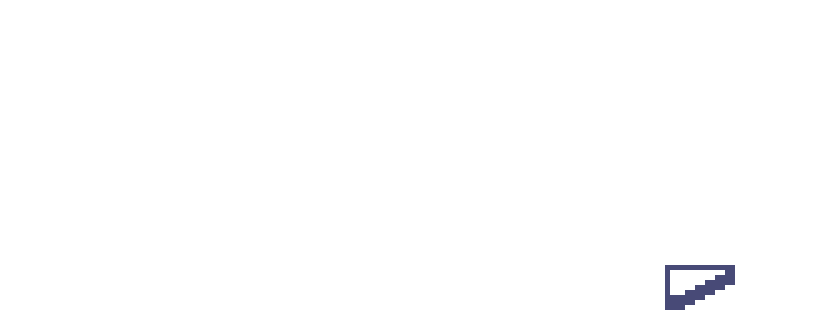

Behold the KaijuKingz; larger than life pixel beasts tearing down a city near you. Our Our creed is to expand the Our creed is to expand the Metaverse by supporting talented creatives and developers looking to break into NFTs. $RWASTE radiatesin the core of our community, fuel for out Kaijuz. Demolish the old to make way for a new kind of community - a community of Kingz



KaijuKingz was spawned from the mind of CyberKongz holder and community member, OhDots, under his newly founded company: Augminted Labs. KaijuKingz hopes to expand its community with synergistic mechanics that foster competition and collaboration between Web3 communities. The collection will start with a mint of 3,333 Genesis Kaijuz, each granting its holder access to special perks and accesses. Genesis Kaijuz passively generate Radioactive Waste, which can be used to create Baby Kaijuz. Standing larger than life in a 69x69 pixel square, Kaijuz will have a wide variety of traits, types, and different aesthetics. Holding a Genesis Kaiju will reserve you a throne as a King of the Metaverse.